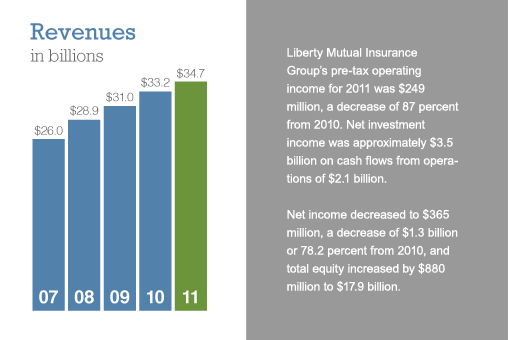
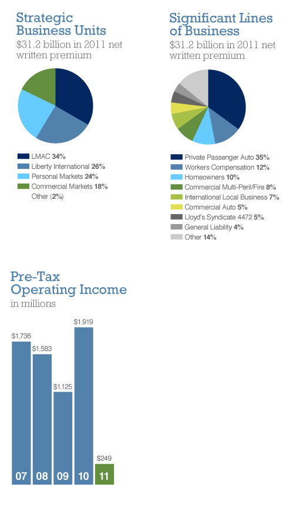

Boston-based Liberty Mutual Insurance Group is a diversified global insurer and the third-largest property and casualty insurer in the U.S. based on A.M. Best Company’s report of 2010 direct written premium. The Company also ranks 82nd on the Fortune 500 list of largest corporations in the U.S. based on 2010 revenue.
As of December 31, 2011, the Company had $117.1 billion in consolidated assets, $99.3 billion in consolidated liabilities and $34.7 billion in annual consolidated revenues.
Liberty Mutual Insurance Group employs more than 45,000 people in more than 900 offices throughout the world.
Liberty Mutual Insurance Group offers a wide range of insurance products and services, including personal automobile, workers compensation, homeowners, commercial multiple peril, commercial automobile, general liability, global specialty, group disability, assumed reinsurance, fire and surety through four strategic business units:
- Personal Markets
- Liberty Mutual Agency Corporation
- Commercial Markets
- International
Each business unit operates independently of the others and has dedicated sales, underwriting, claims, actuarial, financial and certain information technology resources.
 